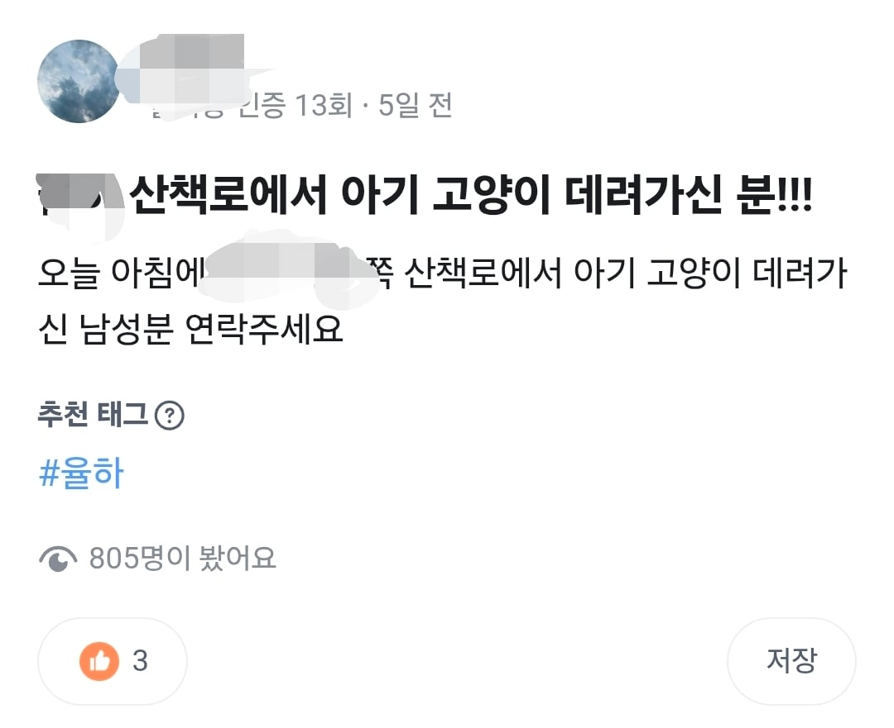
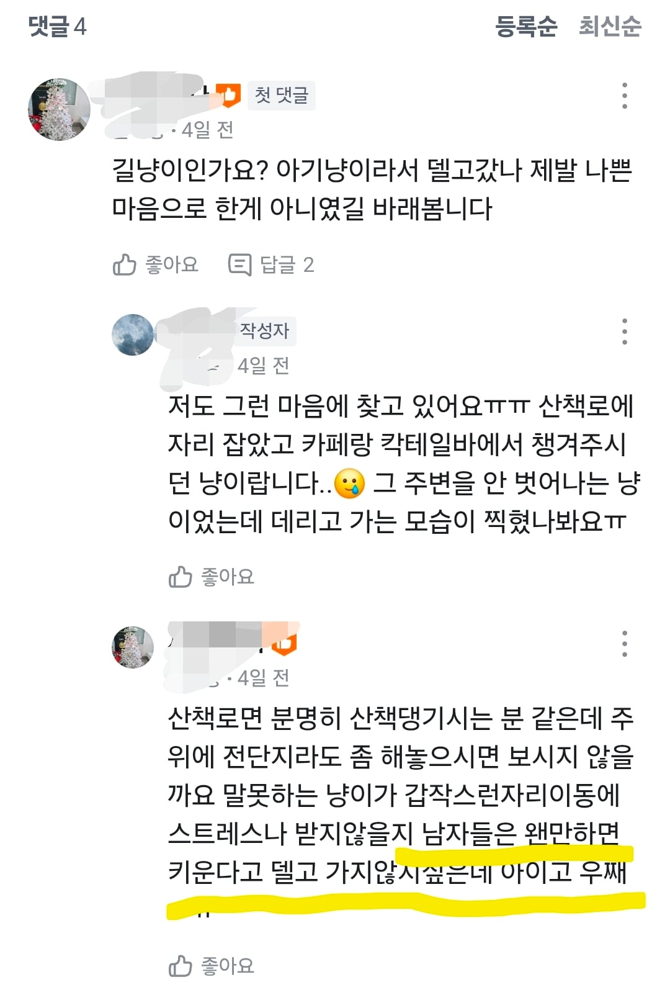

진작 집으로 데려가서 키우든가ㅋㅋㅋ
남자들은 뭐 고양이잡아먹는줄아나


진작 집으로 데려가서 키우든가ㅋㅋㅋ
남자들은 뭐 고양이잡아먹는줄아나
미래에 교과서에 나올듯
캣맘 is 정신병자
분양비 뜯어낼려고 그러는거 같은데
??? : 책임비 고밥비 주셔야하구요,
재직증명서랑 고용보험 자격증명서랑
현관 비밀번호 주셔야하는데
그냥 가져가시면 어떡해요 빼애애애애애애액
아찔하다
정신병이 맞다
ㅋㅋㅋㅋㅋ 근처 카페랑 칵테일바에서 챙겨줬지 본인은 그래서 뭘 처했다는 건데
???:케헤헷! 이런 곳에 고양이가 있다니? 내 몸보신에 제격이란 말이지! 케하하하하!!!!
우하하 빵빠레!!
SSS급 나비탕 재료 겟⭐또다제!!! 제하하하하
노란 밑줄 표시한 내용은
남자는 고양이 안줏어간다는뜻 같은데
본문은 남자가 줏어갔다고 써있는거보면
그런뜻으로 쓴건 아니라고봄
남자는 고양이 줏어먹는다는뜻 같은데
잠깨고다시읽으시오
여자가 데려가면 임보
남자가 데려가면 납치?
캣 레이디는 이미 유구한 전통을 가진 정신병자 집단임 전세계가 알지
남자가 뭐 하면 다 불손한 의도가 있다고 함
율하는 뭐지 설마 이름 붙인건 아닐테고
지들보다 10배는 좋은 사람인데 씨발년들이 ㅋㅋㅋ
크레이지 캣 레이디
길에서 갓챠 돌리다가 이쁜거 뜨면 팔아먹어야하니까
분탕댓글 달고싶네 ㄹㅇㅋㅋㅋ
아 걔요~ 지금은 어딧을까요?
이렇게만 달아도 저런 저지능정신병자들은
바로 공중제비 돌아주던데
고소하세요!
왠이 아니라 웬이다
왠지/왠줄 빼고는 다 웬이다
정병페미캣맘은 교집합이다
고양이가 남자를 주워갔다고 하내요
아깽이 마이께따아 헤헤헤 데려가야지이~
소설을 써도 이렇게는 안쓰겠다 ㅋㅋㅋ